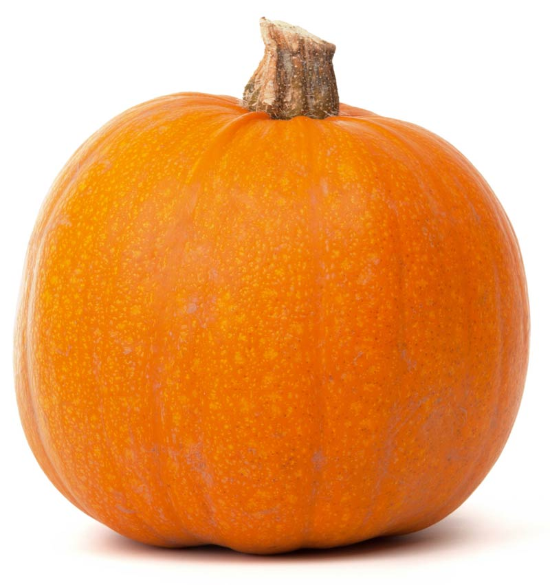
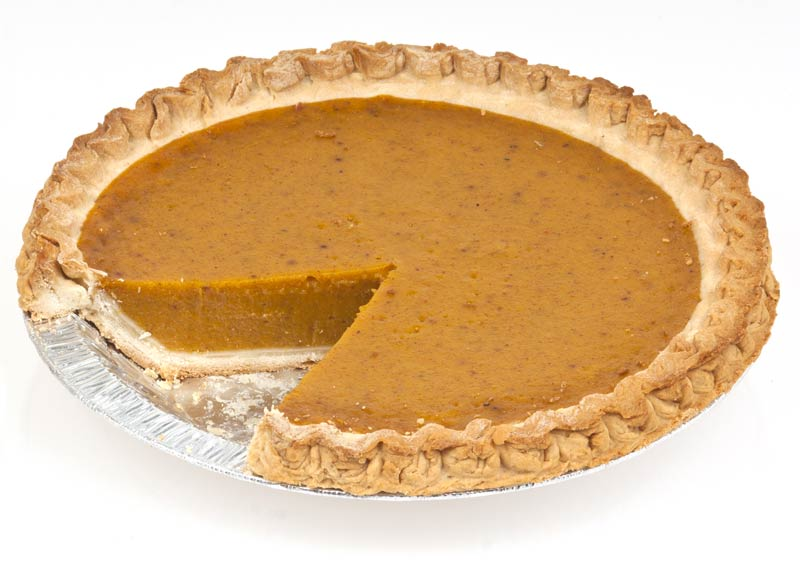
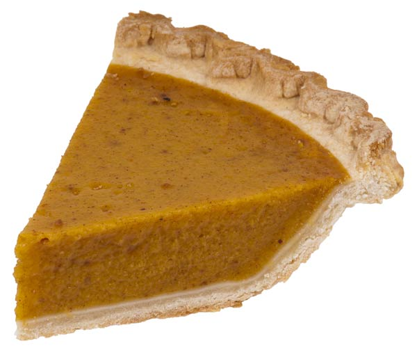

Pumpkin
A pumpkin is a cultivar of a squash plant, most commonly of Cucurbita pepo, that is round, with smooth, slightly ribbed skin, and deep yellow to orange coloration. The thick shell contains the seeds and pulp. Some exceptionally large cultivars of squash with similar appearance have also been derived from Cucurbita maxima.
Pumpkins, like other squash, originated in North America. The oldest evidence, pumpkin-related seeds dating between 7000 and 5500 BC, was found in Mexico.
Since some squash share the same botanical classifications as pumpkins, the names are frequently used interchangeably. One often-used botanical classification relies on the characteristics of the stems: pumpkin stems are more rigid, prickly, and angular (with an approximate five-degree angle) than squash stems, which are generally softer, more rounded, and more flared where joined to the fruit. Pumpkin fruits are a type of botanical berry known as a pepo.
Pumpkins are very versatile in their uses for cooking. Most parts of the pumpkin are edible, including the fleshy shell, the seeds, the leaves, and even the flowers. In the United States and Canada, pumpkin is a popular Halloween and Thanksgiving staple. Pumpkin purée is sometimes prepared and frozen for later use.
Cooking
A can of pureed pumpkin, typically used as the main ingredient in pumpkin pie.
When ripe, the pumpkin can be boiled, steamed, or roasted. In its native North America, it is a very important, traditional part of the autumn harvest, eaten mashed and making its way into soups and purees. Often, it is made into pie, various kinds of which are a traditional staple of the Canadian and American Thanksgiving holidays. In Canada, Mexico, the United States, Europe and China, the seeds are often roasted and eaten as a snack.
Pumpkins that are still small and green may be eaten in the same way as squash or zucchini. In the Middle East, pumpkin is used for sweet dishes; a well-known sweet delicacy is called halawa yaqtin. In South Asian countries such as India, pumpkin is cooked with butter, sugar, and spices in a dish called kadu ka halwa. Pumpkin is used to make sambar in Udupi cuisine. In Guangxi province, China, the leaves of the pumpkin plant are consumed as a cooked vegetable or in soups. In Australia and New Zealand, pumpkin is often roasted in conjunction with other vegetables. In Japan, small pumpkins are served in savory dishes, including tempura. In Myanmar, pumpkins are used in both cooking and desserts (candied). The seeds are a popular sunflower seed substitute. In Thailand, small pumpkins are steamed with custard inside and served as a dessert. In Vietnam, pumpkins are commonly cooked in soups with pork or shrimp. In Italy, it can be used with cheeses as a savory stuffing for ravioli. Also, pumpkin can be used to flavor both alcoholic and nonalcoholic beverages.
In the southwestern United States and Mexico, pumpkin and squash flowers are a popular and widely available food item. They may be used to garnish dishes, and they may be dredged in a batter then fried in oil. Pumpkin leaves are a popular vegetable in the Western and central regions of Kenya; they are called seveve, and are an ingredient of mukimo, respectively, whereas the pumpkin itself is usually boiled or steamed. The seeds are popular with children who roast them on a pan before eating them. Pumpkin leaves are also eaten in Zambia, where they are called chibwabwa and are boiled and cooked with groundnut paste as a side dish.
Other than the traditionally defined pumpkin, commercially canned "pumpkin" puree and pumpkin pie fillings may contain other winter squashes, such as butternut squash.
Seeds
Pumpkin seeds, also known as pepitas, are edible and nutrient-rich. They are about 1.5 cm (0.5 in) long, flat, asymmetrically oval, light green in color and usually covered by a white husk, although some pumpkin varieties produce seeds without them. Pumpkin seeds are a popular snack that can be found hulled or semi-hulled at most grocery stores. Per ounce serving, pumpkin seeds are a good source of protein, magnesium, copper and zinc.
Pumpkin seed oil
Pumpkin seed oil, a thick oil pressed from roasted pumpkin seeds, appears red or green in color depending on the oil layer thickness, container properties and hue shift of the observer's vision. When used for cooking or as a salad dressing, pumpkin seed oil is generally mixed with other oils because of its robust flavor. Used in cooking in central and eastern Europe, it is considered a delicacy in traditional local cuisines such as for pumpkin soup, potato salad or even vanilla ice cream.[citation needed] Pumpkin seed oil contains fatty acids, such as oleic acid and alpha-linolenic acid.